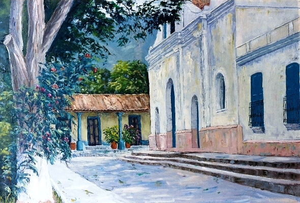
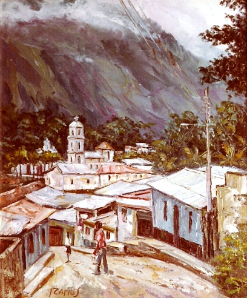
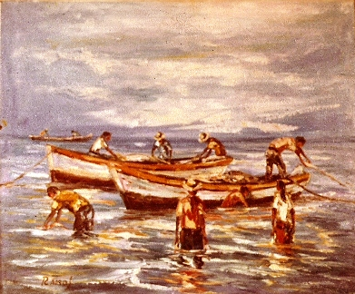
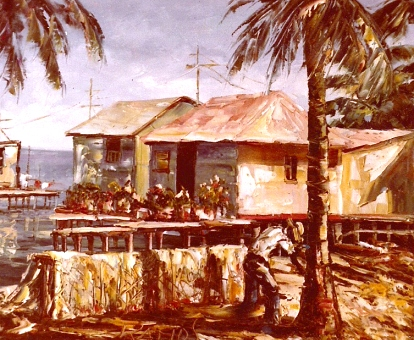
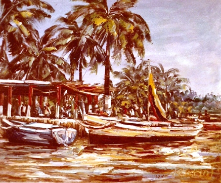
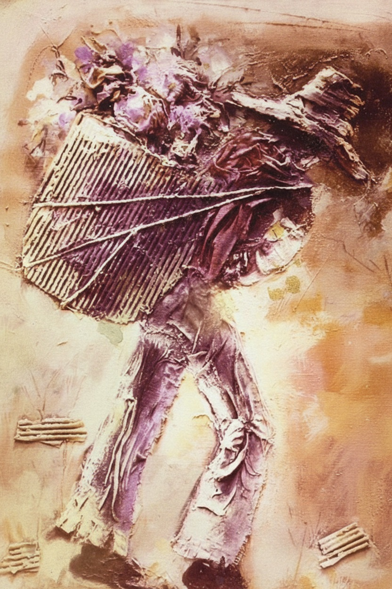

La Obra de Ramos
Ramos es un artista plástico latinoamericano que ha dedicado gran parte de su obra a recoger el rostro y el espíritu telúrico de lo venezolano. Sus lienzos, que en su mayor parte son paisajes de esta tierra, poseen ese hálito, ese élan cromático-poético dentro del cual Venezuela gira, vive y se proyecta como una ola adánica de deslumbramientos de luz, donde las rocas, los árboles y el cielo se visten a cada instante de luminosos y apasionantes esplendores.
De esta manera, ha logrado plasmar su esencia misma, pues capta la luz del trópico de una forma intensa y brillante. Además, al pintar con la técnica de la espátula, crea un trazo con relieve que rompe con el dibujo y la fotografía, generando una manifestación plástica que otorga un carácter profundamente artístico a sus obras.
A través de sus investigaciones, Ramos también se sumerge en el mundo etéreo de lo abstracto, retomando esta escuela y creando piezas con un contenido y un lenguaje humanista que imprimen a sus cuadros un carácter muy original.
La referencia anterior persigue únicamente destacar algunas de las cualidades y perfiles que identifican la obra de este artista plástico. Las presentaciones casi siempre resultan innecesarias cuando se trata de obras como la técnica y la temática con las que trabaja Ramos.
Frente al hecho artístico, frente al hecho plástico, la literatura apenas puede servir como una simple referencia, como un punto de apoyo. Es el público y la crítica especializada quienes deben observar, valorar y catalogar la obra de este pintor latinoamericano.
Crítico de Arte


Exposiciones Colectivas
- El Nuevo Arte – Guayaquil
- Galería Venezuela Mía – Caracas
- Galería Salón U.I.E. – Praga
- Gran Colectiva de Octubre – Caracas
- C.A.N.T.V. – Caracas
- A.V.A.P. – Caracas
Exposiciones Individuales
- Galería Siglo XX – New York
- Galería The Star – New York
- Centro Colombo Americano – Medellín
- Galería de la CANTV – Caracas
- Asociación Cultural Shell – Caracas / Maracaibo
- Galería Dr. Hugo Finoll – Lagunillas
- Galería del Concejo del D.F. – Caracas
- Galería Altamira – Maracaibo
- Galería Sans Souci – Caracas
- Gobernación del Zulia – Maracaibo
- Asociación Cultural Maraven – Caracas / Maracaibo
- Concejo Municipal del Dto. Carirubana – Punto Fijo
- Club Venezolano Alemán – Caracas
- Embajada Americana – Caracas
- Hotel Radisson Eurobuilding – Caracas
- Ministerio de Educación – Caracas
- Casa de la Cultura de Ciudad Ojeda – Ciudad Ojeda
- Palacio Municipal de Caracas – Caracas



Obras en colecciones públicas y privadas
- Comandancia General de la Marina – Pescadores de Margarita
- Concejo Municipal del D.F. – Lavanderas
- Gobernación del Zulia – Palafitos de Sinamaica
- Asociación Cultural Maraven – Calle de La Guaira
- Ministerio de la Defensa – Ávila, Calle de La Guaira
- Concejo Municipal del Dto. Carirubana – Araguaney
- Ministerio de la Cultura (Cinemateca Nacional) – Bolívar Fuerte
- Colecciones privadas – Venezuela, Canadá, Colombia, Estados Unidos, Ecuador, Suiza, México, Alemania, Holanda, Inglaterra, Italia, Japón
- Bancos internacionales – Deutsche Bank, Bank of Tokyo, Dresdner Bank, Swiss Bank Corporation, Unión de Bancos Suizos, Deutsche Südamerikanische Bank, Citibank
- Empresas privadas – Bayer, Mitsubishi, Mabe, Hoechst, Organon, Pharmathon, Aventis, Schering, Teikoku Oil, Marubeni
Reconocimientos y menciones culturales
- Mención Especial en Salón Nacional de Arte Contemporáneo
- Reconocimiento Institucional por Aporte a la Cultura Visual Venezolana
- Participación destacada en Bienales Regionales
- Obra reseñada en publicaciones especializadas de arte latinoamericano
